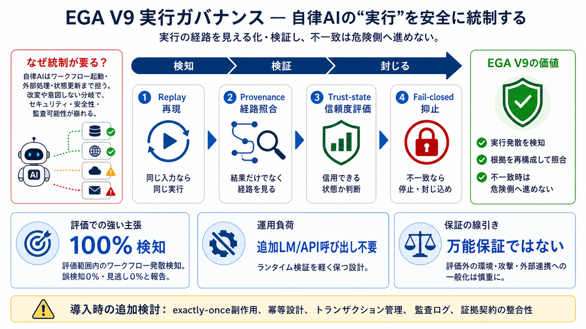

AI Governance Report 2026 – State of the Art, Limitations, and Breakthroughs (GhostDrift)
### 5.4 Evidence Architecture 1. Constraint Definition: Define the allowable risk range (budget) based on regulatory re…

自律AIが“実行”に踏み込むとき、分岐・逸脱を検知して危険な結果を封じるための統制レイヤです。
自律型AIは生成だけでなく、ワークフロー起動・外部処理呼び出し・状態更新まで担います。途中で改変されたり意図しない分岐に入ると、セキュリティ・安全性・監査可能性が崩れます。
EGA V9は“単一技術”ではなく、ランタイム・ガバナンス層として複数要素を統合します。核心は決定論的リプレイ・検証・trust-state・fail-closed containmentの組み合わせです。
最大10,000ワークフローの範囲で、実行発散検知が 100%（誤検知0%、見逃し0%）と報告されています。さらに1,000ワークフローのハードケースでも同等の方向性が示されています。
決定論的リプレイの生成物とベンチマーク成果物の再現性が示され、ランタイム検証では追加の言語モデル呼び出しや外部APIリクエストが不要と強調されています。
報告の100%は「評価した範囲での実行発散検知」の証拠であり、すべてのランタイム・セキュリティ性質を保証するものではありません。つまり、保証対象は精密に読み替える必要があります。
敵対的なワークフロー改変でも、fail-closedの抑止が働くことが示されています。一方で、事後の持続的制限・副作用のexactly-once・完全な証拠契約（evidence-contract）の整合性は未確立の可能性が示唆されます。
前提（ワークフロー種類・実行環境・攻撃モデル粒度・観測可能な証拠・評価期間）が詳細に列挙されない場合、別アプリ/別基盤モデル/別外部連携へそのまま外挿できない可能性があります。
exactly-once副作用や証拠契約完全性が未達の可能性があるなら、“封じる”だけでなく副作用を安全に回す別レイヤが要り得ます（例：トランザクション管理・冪等設計・監査ログ）。
決定論的実行ガバナンスを“実装寄り”に前進させ、再現可能な評価で実行発散検知を提示します。導入前は、何を保証し何を保証しないかをユースケースに合わせて精査するのが結論です。
### 5.4 Evidence Architecture 1. Constraint Definition: Define the allowable risk range (budget) based on regulatory re…
Implementation Notes for AI Agent Governance [...] Key Implementation Considerations [...] ### Capability 5: Blast-Radiu…
Runtime authorization for AI agents Pre-execution authorization Deterministic authorization Execution trace walkthrou…
As enterprises shift from static LLM chatbots to autonomous AI agents, traditional compliance and governance frameworks …
LogoLogoLogoLogo Request a Demo # The AI era requires closed-loop infrastructure governance 22 March 2026 , Nort…